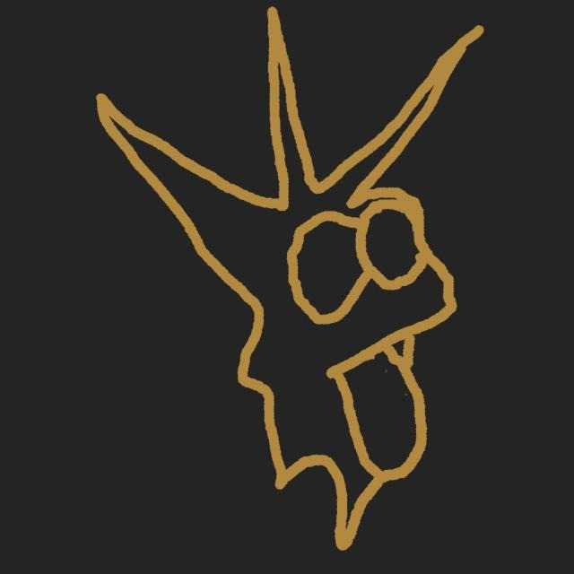

Se trata de la famosa banda integrada por los guitarristas Arturo , Mario Olivares ; el bajista Diego Olivares y el baterista Juan Lucas
Su comienzo se remonta al 2022 cuando dos de los fundadores se juntaron en una de sus casas y la inspiración surgió. Oporto, a partir de ese momento, será el lugar donde toda la música suceda, donde surja el arte, la inspiración, pero también la frustración y los enfrentamientos. Desde entonces han habido escisiones y cambios en los integrantes pero su esencia no ha cambiado, un conjunto de muchachos que intentan crear arte en un contexto que les empuja hacia la mediocridad, el cinismo y el conformismo.
Aunque el volumen de la obra es pequeño, cada pieza es un mundo que explorar. Estos dos son algunos de los proyectos más célebres
Canal de youtube de QuadraPassel 